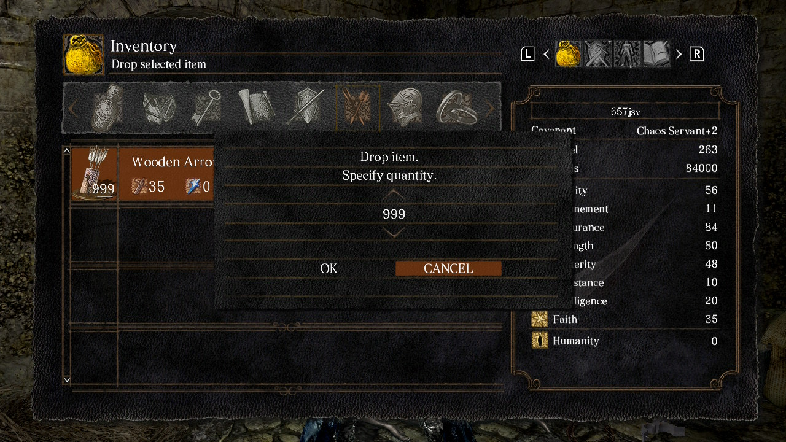
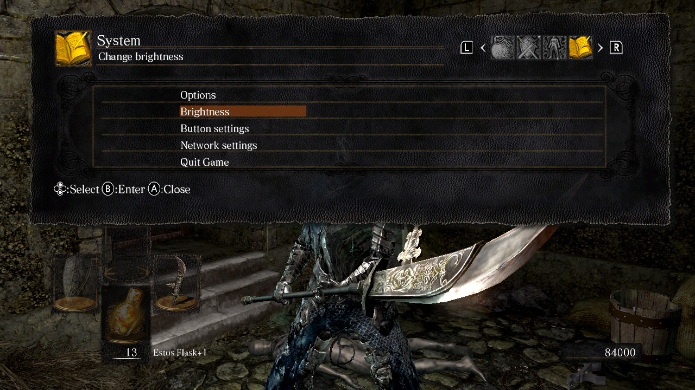
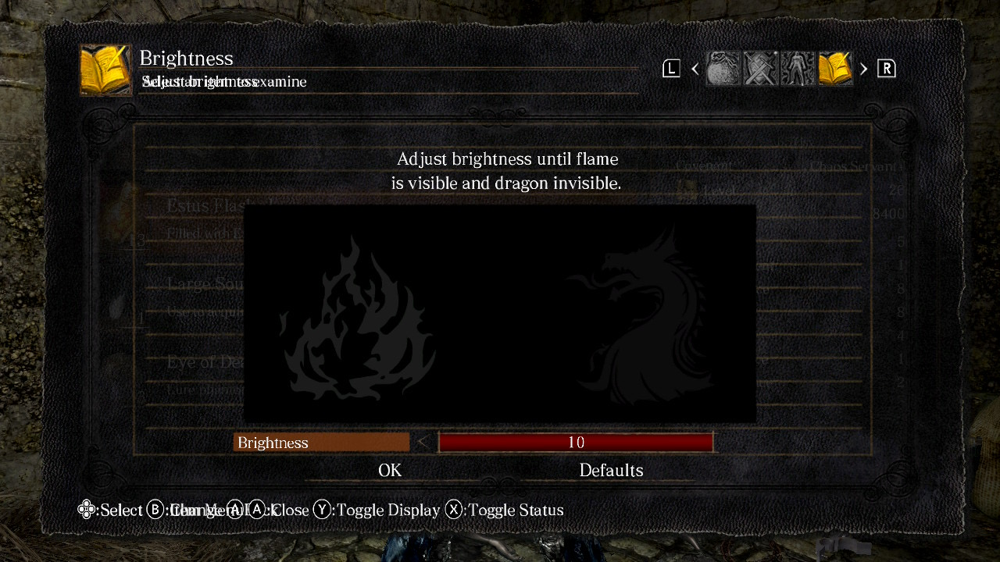
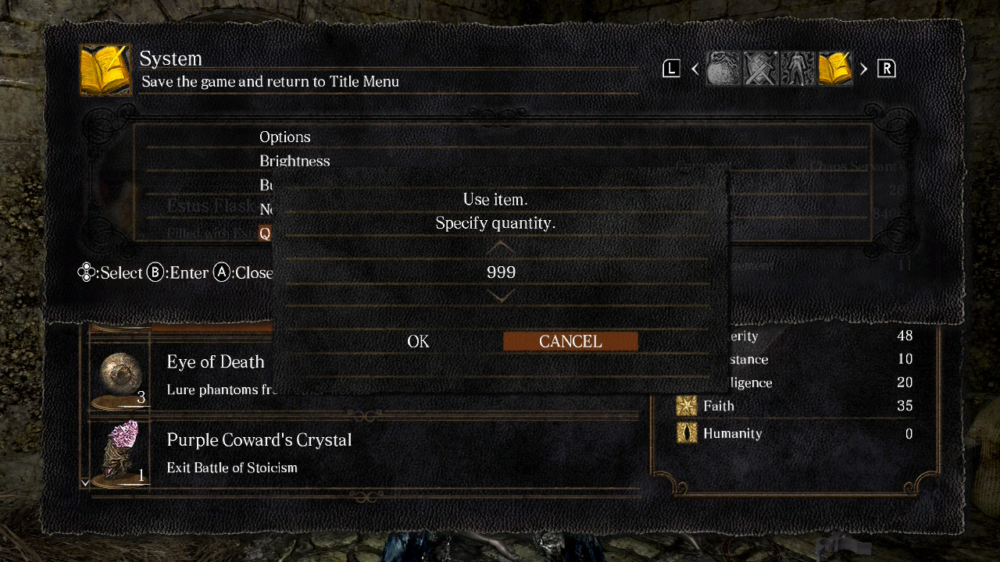
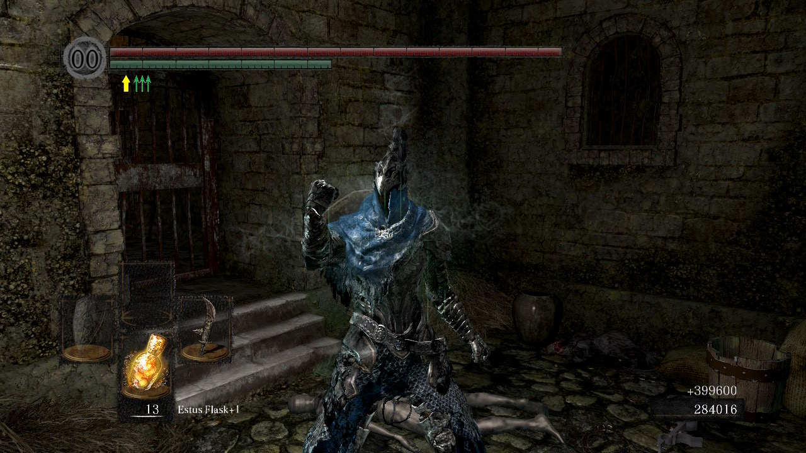

Quality Assurance Case Study
This case study documents a reproducible inventory and user-interface exploit in Dark Souls Remastered. The exploit allows the game to process up to 999 uses of certain consumable items even when the player does not actually possess that quantity.
The behavior was personally reproduced on the Nintendo Switch version of Dark Souls Remastered. Testing confirmed that standard Soul consumables and Humanity are affected, while Boss Souls did not successfully reproduce the same behavior.
The issue appears to involve a combination of retained quantity values, overlapping menu states, and insufficient validation of the player's actual inventory quantity at the time the consumable-use action is processed.
Game: Dark Souls Remastered
Platform Tested: Nintendo Switch
Testing Method: Manual reproduction
Evidence: Personally recorded gameplay footage and screenshots
Other Platforms: Similar versions of the exploit have been publicly reported on other platforms, but those platforms were not personally verified as part of this case study.
Before attempting reproduction, the player must possess 999 Wooden Arrows. These are used to establish the quantity value required later in the exploit sequence.
The player should also organize the consumable inventory so that the Estus Flask appears at the top of the consumable list and the item being tested is positioned directly beneath it.
Supported test items include standard Soul consumables and Humanity. Boss Souls were also tested separately but did not successfully reproduce the exploit.




The game should validate the player's actual inventory quantity before processing a consumable-use action.
If the player owns fewer than 999 copies of the selected item, the game should prevent the player from using a quantity greater than the number of items currently present in inventory.
When the exploit is successfully performed, the game processes the selected consumable as though 999 copies are being used, even when the player possesses fewer than 999.
For example, if the player possesses two Soul of a Lost Undead items and executes the exploit using a quantity of 999, the two legitimate inventory items are consumed and the game processes an additional 997 uses.
This results in a total of 999 consumptions even though only two copies of the item were actually present in inventory before the action.
The exploit therefore does not simply duplicate physical inventory items. Instead, the game accepts and processes a consumption quantity greater than the player's actual inventory count.

| Item Category | Observed Result |
|---|---|
| Standard Soul Consumables | Exploit successfully reproduced |
| Humanity | Exploit successfully reproduced |
| Boss Souls | Exploit did not reproduce successfully |
Standard Soul consumables were successfully tested across multiple item tiers, ranging from Soul of a Lost Undead through Soul of a Great Hero.
Humanity was also successfully affected by the same exploit sequence.
Boss Souls did not reproduce the same behavior. Unlike standard Soul consumables and Humanity, Boss Souls introduce an additional confirmation prompt before the item is consumed.
Based on observed testing, this additional confirmation step appears to interrupt the exploit sequence. The exact internal reason cannot be confirmed without access to the game's source code.
Successful exploitation can provide the player with a quantity of Souls far beyond what would normally be obtainable from the number of consumable items actually held in inventory.
Because Souls function as both currency and a resource used for character progression, the exploit can significantly alter the intended progression and in-game economy.
The same behavior also affects Humanity, allowing the exploit to influence another limited consumable resource.
Suggested Severity: High
The issue does not prevent normal gameplay and requires deliberate player actions to reproduce. However, successful exploitation can substantially bypass intended resource limitations and progression systems.
For that reason, the defect would be treated as a significant gameplay and economy issue rather than a crash or progression-blocking defect.
The observed behavior suggests that the exploit involves an interaction between the inventory quantity selector, menu-state manipulation, and consumable item processing.
The quantity value selected during the Wooden Arrow drop operation appears to remain available later in the exploit sequence. After the menu-state overlap is created, the game allows that quantity to be applied to a consumable-use action without correctly limiting the request to the number of items actually present in inventory.
This is a behavioral hypothesis based on external testing. The underlying implementation cannot be confirmed without access to the game's source code or internal debugging tools.
If the defect were corrected, regression testing should verify both the exploit itself and normal inventory behavior.
This case study demonstrates how an issue can emerge from the interaction of several otherwise separate game systems rather than from a single isolated feature.
Reproducing the exploit required testing inventory organization, quantity selection, menu navigation, simultaneous inputs, consumable behavior, and differences between multiple item categories.
Compatibility testing also demonstrated that the exploit is not universal across every consumable type, with Boss Souls producing different behavior due to their additional confirmation interaction.
This case study analyzes a publicly documented Dark Souls Remastered exploit for the purpose of demonstrating manual QA testing, reproduction, documentation, impact analysis, and regression-test planning.
This portfolio does not claim original discovery of the exploit.